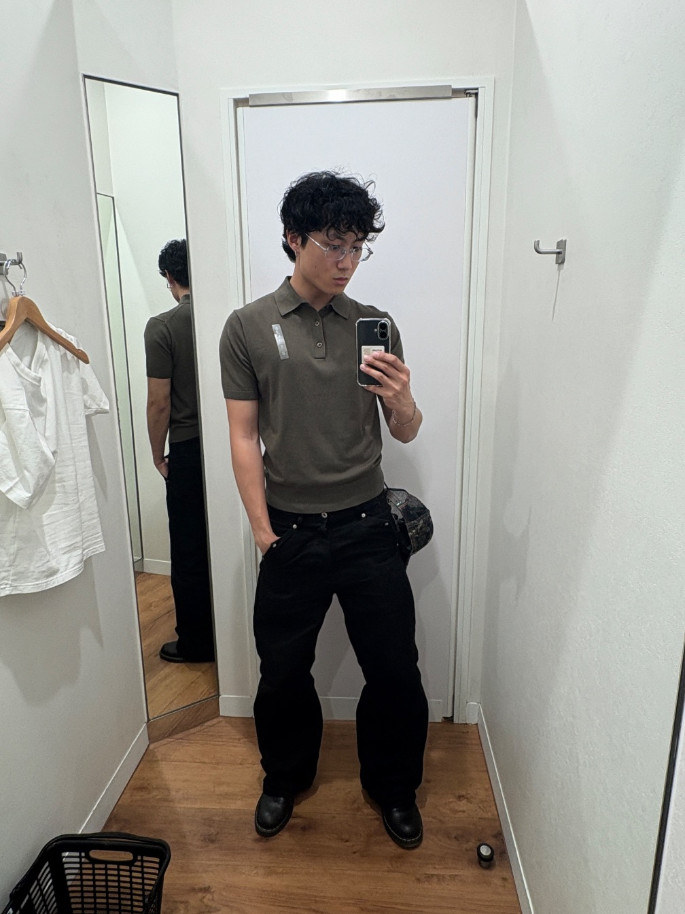
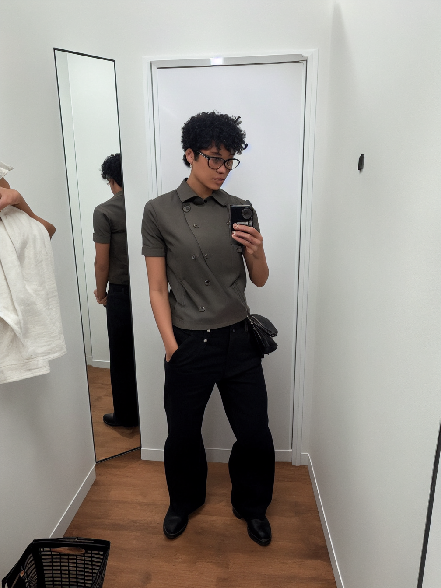
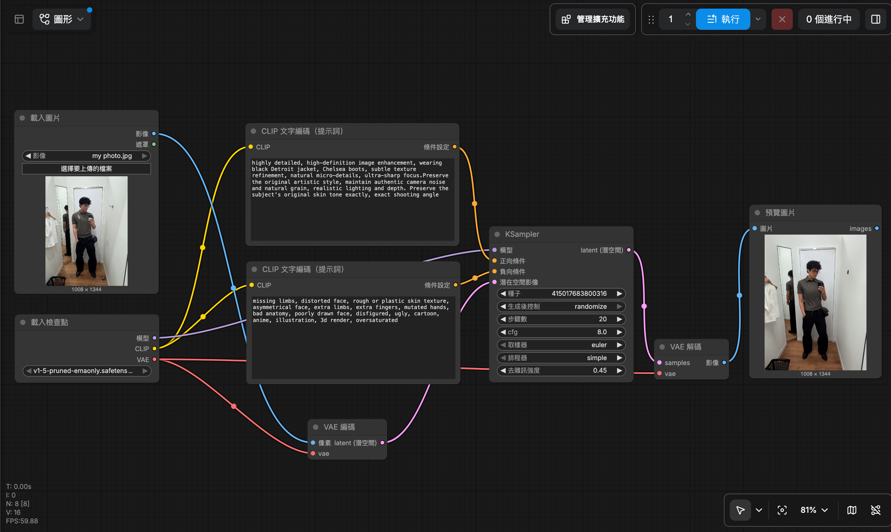

highly detailed, high-definition image enhancement, wearing black Detroit jacket, Chelsea boots, subtle texture refinement, natural micro-details, ultra-sharp focus.Preserve the original artistic style, maintain authentic camera noise and natural grain, realistic lighting and depth. Preserve the subject's original skin tone exactly, exact shooting angle
low quality, blurry, distorted, deformed, ugly, bad anatomy, bad proportions, bad lighting, bad composition
這次的作業不僅讓我更深入了解了comfyUI，也學到了很多關於圖片生成的技巧，另外我也學習到如何透過style.css來美化我的網頁，在花了時間了解後便能靈活運用指令來讓自己得網頁更美觀。